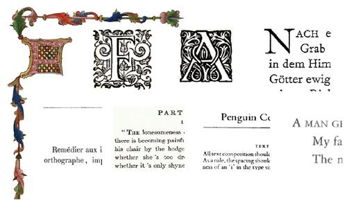
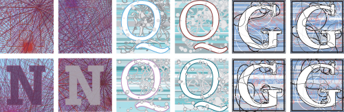

Illuminated Letters in NodeBox
May
23rd
15:14

You’ll see these in the opening passages of bibles and fairy tales. A big capital letter infested with vines, scribbled into a box. Very ornate. Illuminated letters.
I believe this set of NodeBox scripts is whipped up by Andren Novali, based on Edward Johnston’s recipe for an illuminated letter from 1906. A capital letter, a background, decoration around the letter, contained in a box.
Andren supplied some randomness and some Cornu curves and ended up with these:

Can’t you just see these in future books, the tendrils crawling out right when you open?
Hackety.org is for artful computer hacking. Hobbyists & amateurs welcome. Business trends and language wars? None for us, thankyou! More.

Elsewhere
- Shoes
the Ruby app toolkit - Hackety Hack
the coder's starter kit - Try Ruby!
a hands-on tutorial
meqif
When I tried to imagine “the tendrils crawling out”, I thought about Cthulhu. I don’t want to risk an encounter with him. On the other hand, that might be a good thing, I would kill and cook him then.
Anyway, I think it looks very nice. I like how it looks on Andren’s last photo.
ben
Eat? Cthulhu will be the only one doing any eating, blasphemer. Or maybe, slurping?
Anyway, it’d be nice if there was something like NodeBox with Ruby. It looks darn cool.
sirreality
Hot diggety! those cornu things are great!

via Wolfram Mathworld:
Nathan
Wow, those are super-cool. I particularly like the stuff around the “G.”
ben: That’s what I’m trying to accomplish with Scribble. It’s nowhere near NodeBox yet, but then again it’s only a couple weeks old.
brianmuckian
Nathan: I love what your doing with scribble…somebody please animate this
Nathan
brianmuckian: Wow, I hadn’t seen that. Pretty spectacular. Animation’s something that we haven’t started working on yet, but are definitely planning to include, and pretty soon at that.
QuickRedFox
My dad wrote a book on Logo once… if this keeps up I might have to follow in the old man’s tracks.
Hank
_why, everything is broken without you. TalketyTalk is Broken! 500 Error! Abandon ship! Unhand the parachutes! And this happens just as I was getting into HacketyHack. I joined the #hackety channel, where Indian Chief is. You should come visit. I’ll make chipote and spinach dal with lentils and paneer cheese. MMMMMmmmmmm.
Comments are closed for this entry.